Unidad I
Arquitecturas de cómputo
Las arquitecturas de computo son todos aquellos conjuntos de técnicas que permiten construir máquinas lógicas generales programables en forma práctica. En materia terminológica la "arquitectura" de un computador de la "organización" de un computador.
Se puede decir que la arquitectura es la visión funcional, mientras que la organización es la forma en que se construye una cierta arquitectura en base a circuitos lógicos.
1.1.- Modelos de arquitecturas de computo
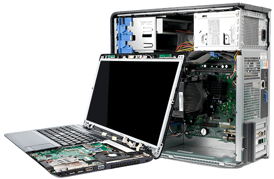
Existen varios modelos de arquitectura, aunque algunos quedarón obsoletos con el plasmar del tiempo, siendo superados por otros paradigmas arquitectónicos. Las primeras máquinas de computación tenían programas fijos. Algunos equipos muy simples siguen utilizando este diseño, ya sea por motivos de simplificación o de formación. Esa situación cambió con la propuesta de la computadora con la capacidad de manejar un conjunto de instrucciones y almacenar en la memoria un conjunto de instrucciones que detalla la computación.
1.1.1- Clásicas

Estas arquitecturas se desarrollaron en las primeras computadoras electromecánicas cuyas características son:
- Estaban construidas con electrónica de válvulas de vacío.
- Se programaban en lenguaje máquina.
- La información se mostraba en bombillas, cada una era un bit.
Arquitectura Von Neumann
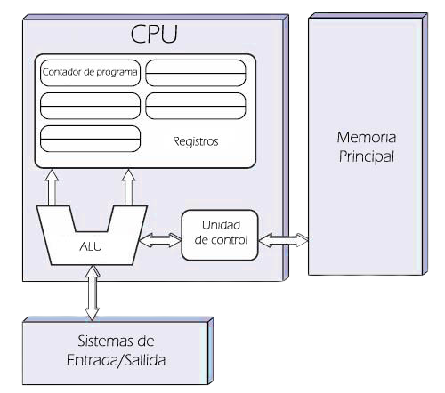Esta arquitectura fue la propuesta por el matemático John von Neumann para la construcción de la computadora EDVAC en 1945, sucesora de la que se considera la primer computadora electrónica, la ENIAC (1946).
Una Arquitectura de von Neumann tiene tres bloques constructivos básicos: la Unidad Central de Proceso (ó CPU por su sigla en inglés), la Memoria y la Entrada/Salida. Las funciones de cada bloque son:
- CPU: Ejecuta los programas.
- Memoria: Almacena el programa (instrucciones ordenadas lógicamente) y los datos (operadores y resultados de las instrucciones).
- Entrada/Salida: Comunica el computador con el mundo exterior, permitiendo la interacción con los usuarios y con otras computadoras.
Las instrucciones provenientes del sistema de entrada, son almacenados por la memoria, procesados por la ALU bajo la dirección de la unidad de control. Los resultados obtenidos son enviados a la unidad de salida. En las computadoras de programa almacenado, el programa puede manipularse como si se tratara de datos. Este concepto da origen a los compiladores, sistemas operativos y es la base de la gran versatilidad de las computadoras modernas, entre sus limitaciones se encuentra la longitud de las instrucciones por el bus de datos, que hace que el microprocesador tenga que realizar varios accesos a memoria para buscar instrucciones complejas.
Arquitectura Harvard
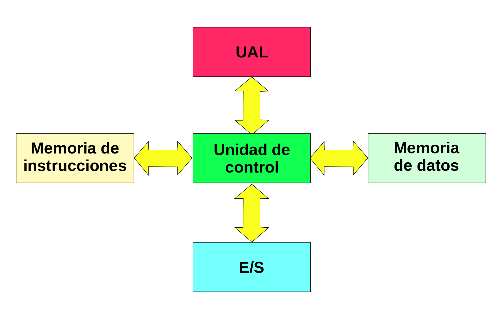La arquitectura Harvard se caracteriza porque existen dos unidades de memoria separadas: una para los datos y otra para las instrucciones.
En una computadora que utiliza la arquitectura Harvard, la CPU puede tanto leer una instrucción como realizar un acceso a la memoria de datos al mismo tiempo, incluso sin una memoria caché. En consecuencia, una arquitectura de computadores Harvard puede ser más rápida para un circuito complejo, debido a que la instrucción obtiene acceso a datos y no compite por una única vía de memoria.
Una de las memorias contiene solamente las instrucciones del programa (Memoria de Programa), y la otra sólo almacena datos (Memoria de Datos). Ambos buses son totalmente independientes lo que permite que la CPU pueda acceder de forma independiente y simultánea a la memoria de datos y a la de instrucciones. El tamaño de las instrucciones no está relacionado con el de los datos, y por lo tanto puede ser optimizado para que cualquier instrucción ocupe una sola posición de memoria de programa, logrando así mayor velocidad y menor longitud de programa.
La principal desventaja de esta arquitectura; el bus de datos y direcciones único se convierte en un cuello de botella por el cual debe pasar toda la información que se lee de o se escribe a la memoria, obligando a que todos los accesos a esta sean secuenciales. Limita el grado de paralelismo (acciones que se pueden realizar al mismo tiempo) y por lo tanto, el desempeño de la computadora.
1.1.2- Segmentadas
Es una técnica de implementación por la cual se solapa la ejecución de múltiples instrucciones, segmentando el procesador en etapas para poder procesar una instrucción diferente en cada una de ellas y trabajar con variables a la vez.
Las etapas están conectadas, cada una a la siguiente, para formar una especie de cauce donde las instrucciones se entran por un extremo, son procesadas a través de las etapas y salen por el otro. La productividad de la segmentación está determinada por la frecuencia con que una instrucción salga del cauce.
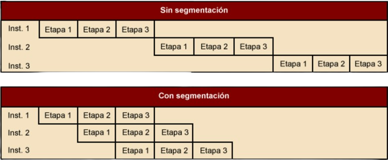Al simplificar cada uno de los pasos, la segmentación puede hacer posibles las operaciones complejas de forma más económica que añadiendo circuitería compleja. Por otra parte, un procesador que rehúsa perseguir un aumento en la velocidad recurriendo a la segmentación puede ser más sencillo y barato de fabricar.
Los usos históricamente más significativos de la segmentación fueron con el proyecto ILLIAC II y con el proyecto IBM Stretch, aunque ya se usó antes una versión más sencilla en el Z1 en 1939 y en el Z3 en 1941, en la actualidad, la segmentación forman parte de la unidad de instrucciones de la mayoría de los microprocesadores.
1.1.3- Multiprocesamiento
El multiprocesamiento es el uso de dos o más procesadores (CPU) en una computadora la ejecución de uno o varios procesos (programas corriendo). Así como la multitarea permite a múltiples procesos compartir una única CPU, múltiples CPU pueden ser utilizados para ejecutar múltiples procesos/hilos en un proceso.
Hay dos tipos principales de multiprocesamiento: multiprocesamiento simétrico (SMP) y multiprocesamiento asimétrico (AMP).
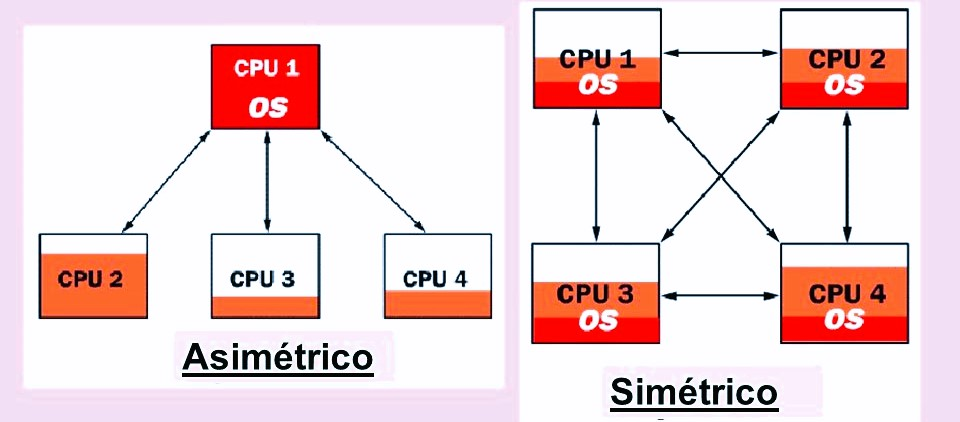En un entorno de multiproceso simétrico, las CPU comparten la misma memoria a través de un bus compartido que debe ser arbitrado para que solamente un microprocesador lo use en cada instante de tiempo, hay que tener en cuenta que el código que corre en una CPU puede afectar a la memoria usada por otra.
Características:
- Son complejos de manejar debido a la memoria y bus de datos compartidos.
- La memoria compartida es el modo de comunicación entre los procesadores.
- Los procesadores tienen la misma prioridad.
- Las tareas son hechas individualmente por cada procesador
- El rendimiento del sistema puede mejorar al agregar más procesadores.
En un entorno de multiprocesamiento asimétrico, no todos los procesadores tienen la misma prioridad, sólo un procesador (maestro) puede acceder a la estructura de datos, los procesadores pueden tener la misma arquitectura o una diferente y el procesador maestro puede asignar procesos a otros procesadores, o predefinirlos.
Características:
- Cada procesador tiene su propia capacidad y especialidad.
- La carga de trabajo entre los procesadores es equilibrada.
- El sistema es flexible con las tareas y los cambios en la carga de trabajo.
- Puede ser mas barato al contar con procesadores diferentes.
1.2 .- Análisis de los componentes
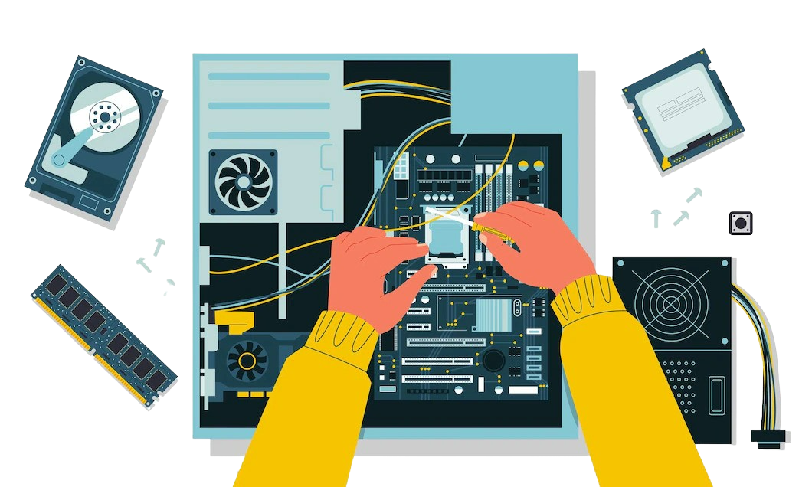
Los componentes que conforman una computadora han ido evolucionando con el pasar del tiempo de acuerdo a las necesidades del consumidor, los programas cada vez demandan mayor velocidad en el procesamiento, lo que implica microprocesadores de mayor eficiencia.
1.2.1- Arquitecturas
Esta es la representación más sencilla posible de un computador, donde almacena, procesa y transfiere sus datos a periféricos o a dispositivos remotos mediante líneas de comunicación.
1.2.1.1 - Unidad Central de Procesamiento
La CPU es la encargada de ejecutar programas, almacenando datos temporalmente de forma que recuerde la última instrucción para ir a la siguiente y es compuesta por la memoria principal, la unidad aritmético lógica y la unidad de control.
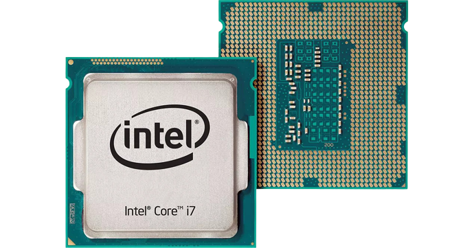La CPU suele ser pequeña, con forma cuadrada, y tiene conectores y pines metálicos. Por lo general, suele estar instalada en la placa base de un ordenador, en un zócalo cuya ubicación depende del modelo, generalmente no va soldado a la placa.
El ciclo de instrucciones es el ciclo de acciones (dividido en 3 fases) que el CPU sigue/repite para procesar instrucciones; algunos procesadores ejecutan el ciclo secuencialmente, y en otros este se ejecuta concurrentemente, la secuencia común es:
- Buscar la instrucción en la memoria principal para que que pueda ser decodificada y ejecutada.
- Decodificar la instrucción. El decodificador interpreta e implementa la instrucción.
- Ejecutar la instrucción, los datos que forman la instrucción son decodificados por la unidad de control, que los interpreta y envía como secuencia de señales de control.
- Almacenar o guardar resultados. El resultado generado por la operación es almacenado en la memoria principal o enviado a un dispositivo de salida dependiendo de la instrucción.
1.2.1.2 - Unidad Aritmética Lógica
La ALU es un circuito digital que realiza operaciones aritméticas y lógicas, las CPU recientes incluyen ALU muy potentes y complejas. En algunas estructuras, la ALU se divide en una unidad aritmética y una unidad lógica. Además de la ALU, las CPU actuales incluyen una unidad de control.
1.2.1.3 - Registros
Los registros son las memorias más cercanas al procesador, son de acceso rápido y disponen de poca capacidad, se miden entre 4 y 64 bits, almacenan datos, comandos e instrucciones y una parte pueden ser visibles para el usuario, otra parte solo para instrucciones privilegiadas y otra solo se utiliza en el funcionamiento interno del procesador. Una posible clasificación de los registros del procesador es la siguiente:
- Registros de propósito general, utilizados como operando en las instrucciones.
- Registros de instrucción, que contiene la direccion de la instrucción siguiente y de la que hay que ejecutar.
- Registros de acceso a memoria, donde se indica la dirección de memoria a acceder y almacenar datos.
- Registros de estado y de control., donde la información sobre el estado del procesador puede ser almacenada.
1.2.1.4 - Buses
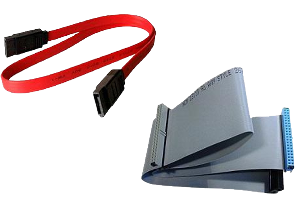Los buses son un sistema digital que transfiere datos entre los componentes de una computadora. Está formado por cables o pistas en un circuito impreso, dispositivos como resistores y condensadores, además de circuitos integrados. Los buses definen su capacidad de acuerdo a la frecuencia máxima de envío y al ancho de los datos. Existen dos tipos de transferencia en los buses:
- Serie: El bus solamente es capaz de transferir los datos bit a bit por un único cable que transmite la información.
- Paralelo: El bus permite transferir varios bits simultáneamente.
1.2.2- Memoria
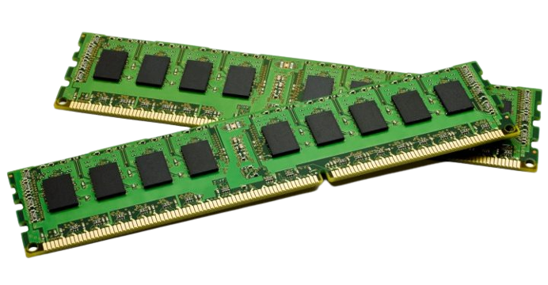La memoria es un dispositivo que retiene, memoriza o almacena datos durante algún periodo de tiempo. Es uno de los componentes fundamentales, donde su memoria principal está interconectada a la unidad central de procesamiento, el CPU.
1.2.2.1 - Manejo de la memoria
Es el proceso de asignar de memoria a los programas que la solicitan, buscando por distintas formas y operaciones la mayor utilidad posible, organizando los procesos y programas que se ejecutan de manera tal que se aproveche de la mejor manera posible el espacio disponible.
El paso principal es trasladar los datos a ejecutarse por la unidad central de procesamiento, a la memoria principal. Actualmente se conoce como memoria virtual y permite que el sistema cuente con una memoria extensa teniendo la memoria real, que puede utilizarse de manera eficiente, por lo que los programas que son utilizados no ocupan lugar innecesario.
Las técnicas que existen para la carga de programas en la memoria son:
- Partición fija: La división de la memoria libre en varias partes (de igual o distinto tamaño)
- Partición dinámica: son las particiones de la memoria en tamaños variables según la cantidad de memoria necesaria para cada proceso.
1.2.2.2 - Memoria principal
La memoria principal de una computadora es la memoria RAM, ahí se almacenan de forma temporal los datos de los programas que están ejecutandose en ese momento. Sus siglas significan Random Access Memory, lo que traducido al español sería Memoria de Acceso Aleatorio.
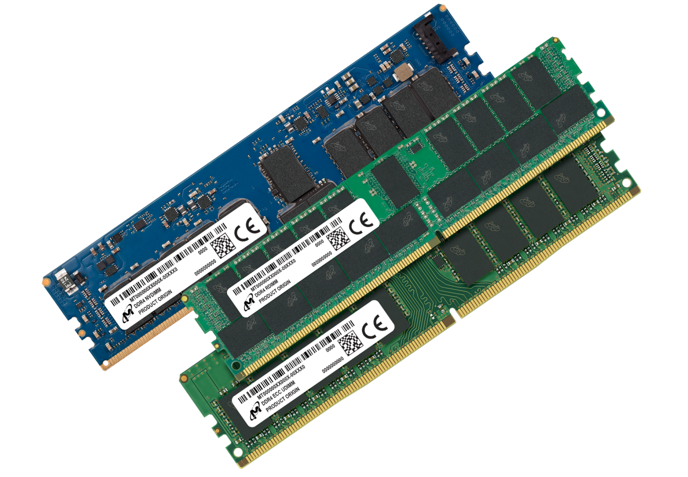Tiene dos características:
- Velocidad: Tiene una velocidad mayor en comparación a otros medios de almacenamiento.
- Almacenamiento: Los datos solo se almacenan de forma temporal, así que cada vez que se reinicie o apague el equipo, los datos que almacenados en la RAM se perderán.
La cantidad de RAM disponible afectará directamente al rendimiento del equipo. Entre mayor RAM, mayor capacidad para gestionar programas a la vez.
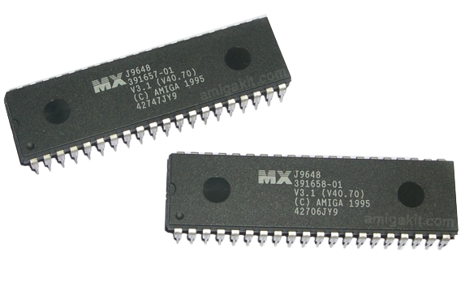Otra memoria que comparte casi el mismo protagonismo que la RAM, es la memoria ROM, que permite solo la lectura de los datos y no su escritura, independientemente de la presencia o no de una fuente de energía, sus siglas significan Read Only Memory, que traducido al español sería Memoria de Solo Lectura y existen modelos de ROM programables cómo los EPROM y los EEPROM.
Tanto la RAM como la ROM son circuitos integrados, llamados chips. El chip es una pequeña pastilla de material semiconductor (silicio) que contiene múltiples circuitos integrados, con los que se realizan numerosas funciones en computadoras y dispositivos electrónicos; que permiten, interrumpen o aumentan el paso de la corriente. Estos chips están sobre una tarjeta o placa.
1.2.2.3 - Memoria caché
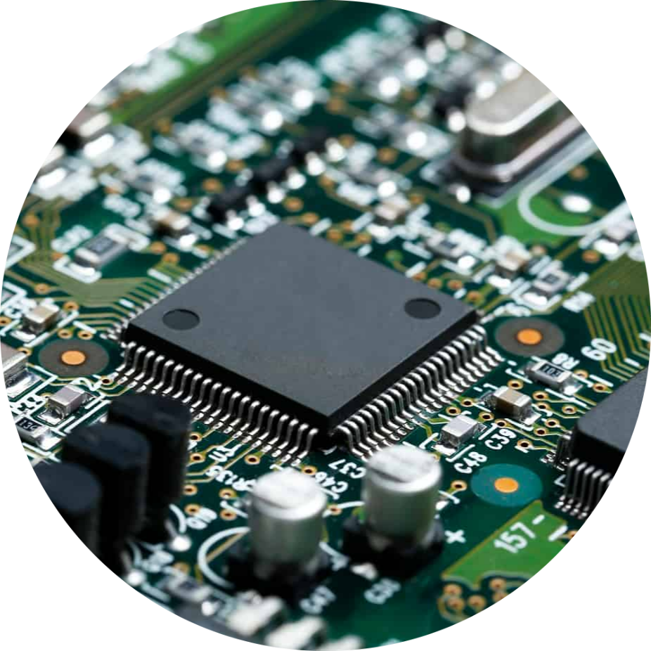Es una memoria de acceso rápido de la unidad central de procesamiento, que guarda temporalmente los datos recientes de los procesos; se sitúa entre el CPU y la RAM para acelerar el intercambio de datos, funciona de manera semejante a la memoria principal, pero es de menor tamaño y de acceso más rápido, cumpliendo el papel de memoria auxiliar ya que posee una gran velocidad y eficiencia, y sirve para que el microprocesador reduzca el tiempo de acceso a datos ubicados en la memoria principal que se utilizan más seguido.
1.2.3- Manejo de la entrada/salida
Uno de los componentes fundamentales de una computadora es la Unidad de Entradas y Salidas, que funcionan como nexo entre el procesador y la memoria, adaptando los dispositivos externos antes de conectarlos al sistema.
1.2.3.1 - Módulos de entrada/salida
Una computadora requiere comunicación con un periférico según las necesidades de un programa. La CPU, la memoria principal y los buses deben compartirse con las transferencias de datos hacia o desde los periféricos. Por lo tanto, los módulos deberán incluir funciones de control y temporización que coordinen el tráfico entre los recursos internos y externos de la computadora.
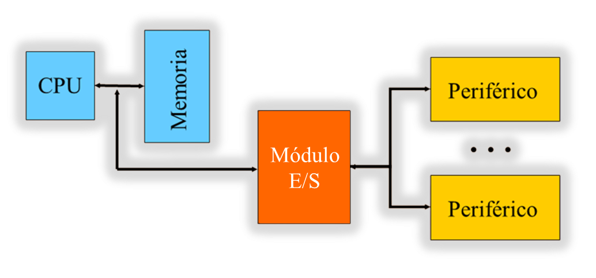Para llevar a cabo la comunicación entre los componentes y un periférico, es necesesario conectar estos dispositivos a la computadora y gestionar la transferencia de datos. Esto, se puede realizar mediante los sistemas de módulos de Entrada/Salida. Estos módulos están conectados con el procesador y la memoria principal, cada uno controla uno o más dispositivos externos.
1.2.3.2 - Entrada / Salida programada
Es una técnica donde los datos se intercambian entre el procesador y el módulo de E/S. Con un programa que se ejecuta en la CPU se controla directamente la operación de E/S. Cuando el procesador envía una orden al módulo de E/S debe esperar que esta operación concluya. La gestión de la operación de E/S por parte de un programa ejecutándose en una CPU rápida genera un gran desperdicio de tiempo.
Hay que tener presente que para programar una rutina que lleve a cabo una operación de E/S con un periférico hay que conocer las direcciones de los puertos de E/S asociadas a los registros del módulo de E/S que gestiona este periférico y el significado o la utilidad de cada uno de los bits. Debido a su complejidad, los propios fabricantes quienes desarrollan estas rutinas.
1.2.3.3 - Entrada / Salida mediante interrupciones
Es una técnica que evita que el CPU tenga que estar parado o haciendo trabajo improductivo mientras espera a que el periférico esté preparado para hacer una nueva operación de E/S y pueda aprovechar este tiempo para ejecutar otros programas, el CPU envía la orden de E/S, pero continúa ejecutando otras instrucciones y es interrumpida por el módulo de E/S cuando ha terminado la operación. Las interrupciones pueden ser:
- Enmascarables, se pueden atender por software en ejecución.
- No enmascarables, se pueden atender por hardware (o señal al procesador) que prioriza un determinado hilo o proceso, a menudo suelen estar ligadas con los distintos dispositivos de entrada o salida.
- Excepciones. Son aquellas que se producen de forma síncrona a la ejecución del procesador y por tanto pueden predecirse si se analiza la traza del programa ejecutado en la CPU.
1.2.3.4 - Acceso directo a la memoria
Es una técnica donde el módulo de E/S y la memoria principal intercambian datos directamente sin la intervención de la CPU, para ello es necesario considerar tanto aspectos del software como del hardware disponible. Esta proceso que sigue es:
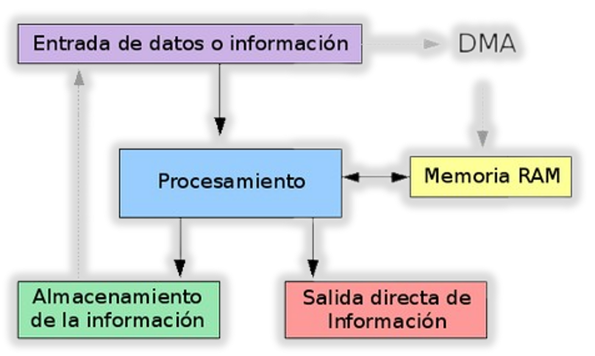- Programación de la operación: El procesador envía información al controlador de DMA para gestionar toda la transferencia de datos.
- Transferencia del bloque de datos: Las operaciones básicas del controlador de DMA son la lectura de un bloque de datos de un periférico y la escritura de un bloque de datos en un periférico, aunque también puede hacer otras operaciones.
- Finalización de la operación de E/S: Acabada la transferencia del bloque, el controlador de DMA envía una petición de interrupción al procesador para informar de que se ha acabado la transferencia de datos.
1.2.3.5 - Canales y procesadores de entrada/salida
La evolución de las computadoras y la complejidad de sus componentes, incluidos los módulos de E/S ha desarollado mejoras que fortalecen la eficiencia de los procesos, ahora se cuenta un procesador capaz de interpretar secuencias de operaciones y de esa forma tener bajo su control un mayor número de operaciones y módulos de E/S, cada vez más complejas y también se incorporó un canal que funciona como extensión del concepto de DMA, ya que puede ejecutar instrucciones de E/S (relevando a la CPU de dichas operaciones), en dos modos operativos:
- Canal selector: Es el que controla dispositivos de velocidad elevada, salvo que en un instante se dedica a transferir datos a uno de estos dispositivos.
- Canal multiplexor: Es el que puede controlar las E/S de varios dispositivos al mismo tiempo.
1.2.4- Buses
Un bus, es una vía de comunicación que conecta y envía datos entre dos o más componentes del ordenador. Está formado por cables o pistas en un circuito impreso. La operación básica del bus se denomina ciclo de bus que permite realizar una transferencia elemental entre dos de los dispositivos conectados a él.
1.2.4.1 - Tipo de buses
Los buses se clasifican en base al tipo de transmisión, como por ejemplo:
- Serie/Paralelo: un bus en serie envía la información secuencialmente bit a bit, mientras que un bus paralelo puede enviar una palabra completa en un solo ciclo de reloj, representando una ventaja por su velocidad pero presentando problemas en la sincronización de señales en largas distancias y su costo es mayor.
- Unidireccional/bidireccional: en función de si únicamente pueden transmitir información en un sentido o si pueden transmitir en ambos sentidos.
- Simplex/semiduplex/fullduplex: el bus simplex es unidireccional. Es semiduplex cuando puede enviar en ambos sentidos pero no al mismo tiempo (o bien envía en un sentido o bien envía en el otro), y es fullduplex cuando puede enviar en ambos sentidos simultáneamente.
- Síncrono/asíncrono: en un bus síncrono las señales se envían siempre atendiendo a un pulso de reloj, mientras que en un bus asíncrono se envían unas señales de inicio de transmisión y fin de transmisión antes de comenzar a emitir y cuando finaliza la emisión.
En base a la funcionalidad que desempeñan tenemos:
- Bus de datos: encargado de transmitir los datos (operandos e instrucciones). El número de líneas que lo componen determina la longitud de la palabra con la que trabajará la CPU. Es bidireccional, ya que los datos pueden fluir hacia o desde la CPU.
- Bus de direcciones: es unidireccional (la información se envía siempre de CPU a memoria o a los componentes de E/S), y su misión es enviar las direcciones a leer o escribir a la memoria. El número de líneas que lo componen determinará la cantidad de memoria que se pueda direccionar.
- Bus de control: es un bus bidireccional que transmite por un lado las señales de control generadas por la unidad de control para la realización de una operación y por otro lado las señales de estado que indicarán en qué modo se encuentran los dispositivos.
Atendiendo al tipo de conexión:
- Dedicados: se asigna una línea de bus de forma permanente a una función (dedicación lógica) o a un subconjunto de componentes del computador (dedicación física). La ventaja de los buses dedicados es el incremento de rendimiento, pero a costa de encarecer el coste e incrementar el tamaño del sistema.
- Compartidos: una misma línea se puede utilizar para interconectar varios componentes y para distintas funciones (buses multiplexados). Tiene la ventaja de que se ahorra espacio y el coste es menor, pero necesita una circuitería más compleja dentro de cada módulo (para saber de qué tipo es cada señal recibida) y empeora el rendimiento.
1.2.4.2 - Estructura de buses
Un bus está compuesto por conductos, o vías, que permiten la interconexión de los diferentes componentes, principálmente, con la CPU y la memoria, dichas líneas eléctricas transmiten voltaje.
Están las líneas de datos, que fijan los caminos para transferir datos entre el resto de componentes de un computador, las líneas de direcciones, que designan la posición/dirección de los datos y las líneas de control, que controlan el acceso y uso de los buses anteriores.
1.2.4.3 - Jerarquía de los buses
Los computadores modernos tienen por lo menos 4 buses diferentes (bus interno o local, bus del procesador, bus del caché, bus de memoria, bus local de E/S, bus estándar de E/S). Se les considera una jerarquía, porque cada bus se conecta al nivel superior a él dentro del computador, integrando así todas las partes del computador. Cada uno es generalmente más lento que el que se encuentra sobre él, siendo el bus del procesador el más rápido tratándose de que este es el dispositivo más rápido del computador. Para mejorar el rendimiento del bus, las jerarquías de buses fueron implementadas cada vez más.
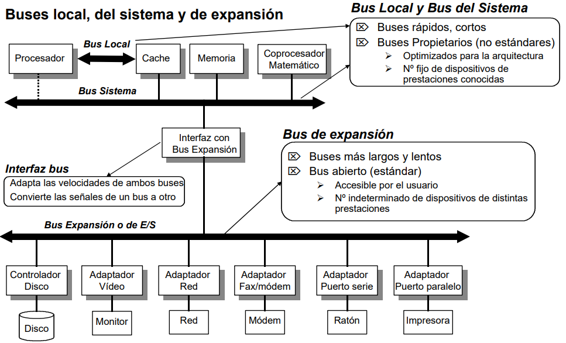Algunas de las ventajas que presenta la jerarquía es se puede transferir información entre la memoria y la E/S sin interrumpir la actividad del procesador, el bus de expansión reduce el tráfico en el bus del sistema y se eliminan problemas de la incompatibilidad.
1.2.5- Interrupciones
Una interrupción consiste en un mecanismo que provoca la alteración del orden lógico de ejecución de instrucciones como respuesta a un evento externo, generado por el hardware de entrada/salida en forma asincrónica al programa que está siendo ejecutado y fuera de su control, el mecanismo comienza con el pedido de interrupción generado por un controlador de entrada/salida, el cuál se genera a raíz de alguna condición detectada por el controlado, dichas condiciones varían de acuerdo al tipo de controlador y como esté configurado. De acuerdo a la forma que la CPU detecta que hay un pedido de interrupción se distinguen dos casos:
- Detección por nivel: En este caso la CPU reconocerá que hay un pedido de interrupción pendiente mientras su entrada INT esté en el nivel lógico alto ("1"), por lo que toda vez que detecte esa entrada en alto, desencadenará la invocación a la rutina de atención.
- Detección por flanco: En este caso no importa el valor absoluto actual de la entrada INT, lo que se tiene en cuenta es si existió un cambio de 0 a 1. Si hubo un flanco y aún no ha sido invocada la rutina de atención, la CPU lo hace y da por cumplido el pedido.
Existen dos situaciones que pueden llevar al mecanismo de interrupciones a tener que tomar una decisión acerca de cómo proceder:
- Interrupciones Simultáneas: Cuando una CPU o un controlador de interrupciones implementa un mecanismo de prioridades, éste determinará cuál de múltiples solicitudes que ocurran a la misma vez será atendida, Cuando la prioridad es fijasiempre será atendida primero la solicitud de una línea de pedido de mayor jerarquía. Normalmente se utiliza la numeración de las entradas para fijar su prioridad, cuando la prioridad es configurable, puede cambiar de acuerdo a las condiciones del sistema en general, cuando el sistema es sin prioridad implementa un sistema de selección de la solicitud equitativo..
- Interrupción de Interrupción: Suponiendo que la no inhibe la aceptación de nuevos pedidos de interrupción hasta ejecutar la instrucción que desenmascara las interrupciones y ocurre un pedido de interrupción, su atención dependerá del esquema de jerarquías/prioridades que tenga implementada la CPU y/o el controlador de interrupciones, aceptando una interrupción de un nivel igual o superior (en algunas arquitecturas puede ser solamente si es superior en sentido estricto) al de la interrupción que está siendo actualmente atendida.